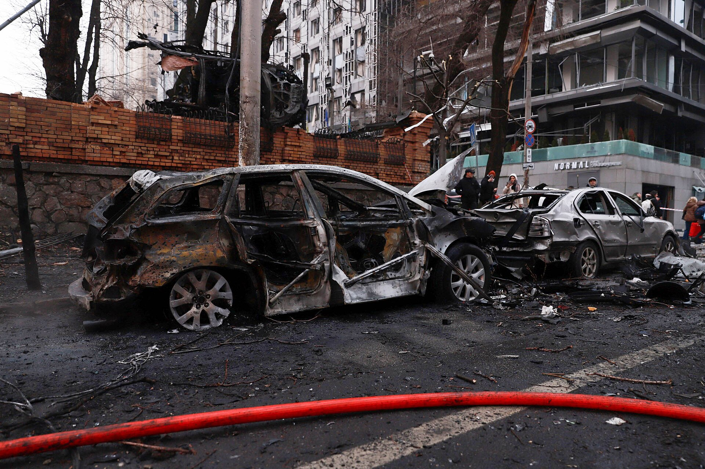

Зеленский: Россия выпустила по Киеву северокорейскую ракету KN-23
Президент Украины заявил, что за ночь по Киеву выпустили 36 баллистических ракет и 172 дрона и что по одному из энергообъектов попала северокорейская ракета.

По словам президента Украины Владимира Зеленского, в ночь на 7 ноября Россия выпустила по Киеву и окрестностям 36 баллистических ракет и 172 дрона. ПВО сбила лишь 4 ракеты.
Северокорейская ракета
Зеленский сообщил, что, по предварительным данным, один из пострадавших ключевых энергообъектов был поражён баллистической ракетой KN-23, произведённой и поставленной Северной Кореей. Минобороны Украины отметило, что бороться с такими ракетами малой дальности системам ПВО «крайне трудно».
Что пострадало
Удары пришлись по подстанции, соединяющей Ровенскую и Хмельницкую АЭС с Киевом, а также по подстанциям в Винницкой, Житомирской, Харьковской и Днепровской областях. В Киеве повреждён Северный мост, частично разрушен детский сад. Пострадали не менее 6 человек, включая ребёнка.

Политический контекст
Зеленский заявил, что удары могли быть направлены на давление на Украину перед запланированными трёхсторонними переговорами Киева, Москвы и Вашингтона в Абу-Даби. Он вновь подчеркнул острую нехватку ракет-перехватчиков для системы ПВО Patriot.